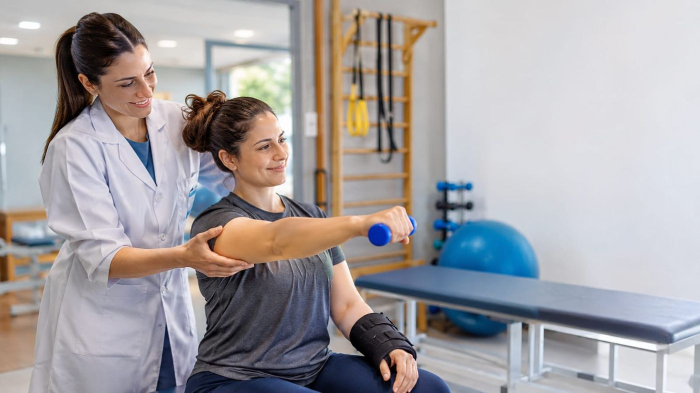
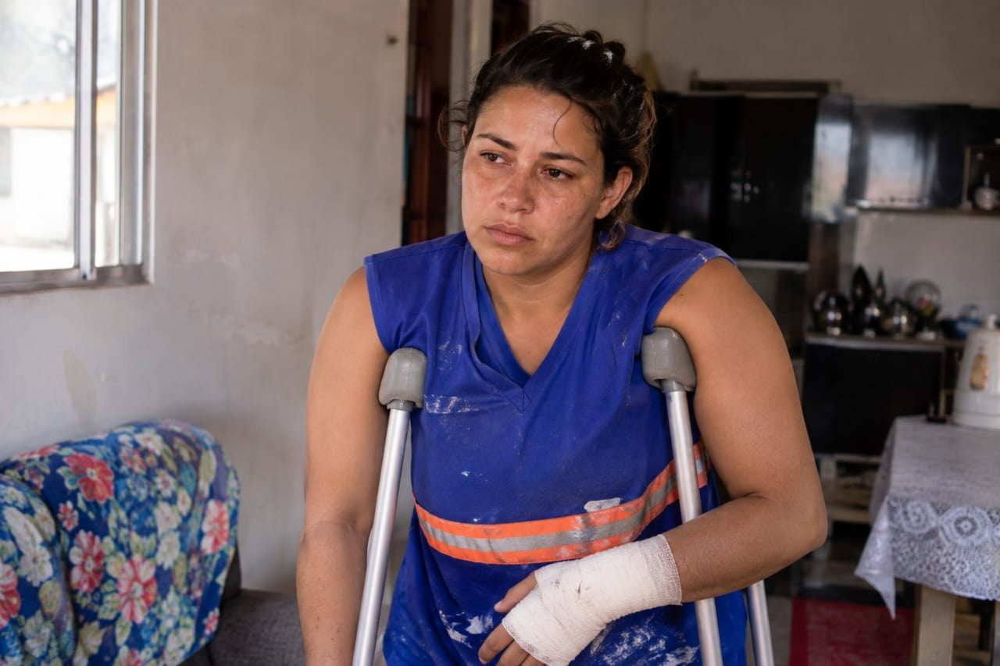
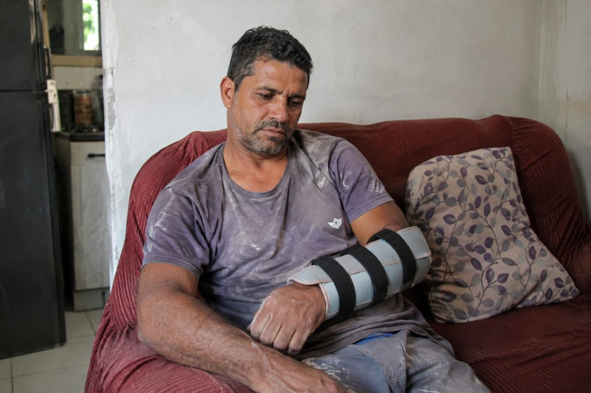

Elvis Andrade Valentim
Advogado · OAB/MS 30.706
Graduado pela Universidade Estadual de Mato Grosso do Sul (UEMS). Atua no Direito Previdenciário, do pedido administrativo no INSS à ação judicial.
Direito previdenciário
A indenização do INSS para quem ficou com sequela
Quem sofreu um acidente, no trabalho ou fora dele, e ficou com sequela que reduz a capacidade de trabalho pode ter direito, mesmo depois de voltar a trabalhar.
Atendimento com hora marcada. Conversa sob sigilo profissional.
Informação
Recebeu auxílio-doença por causa de um acidente e o benefício foi encerrado? Pelo STJ (Tema 862), o auxílio-acidente começa no dia seguinte ao fim do auxílio-doença, respeitado o limite de 5 anos para os valores atrasados.
O auxílio-acidente compensa a sequela que reduz a capacidade para o trabalho habitual (Lei nº 8.213/1991, art. 86). Por isso, pode ser recebido junto com o salário.
Vale para acidente de trabalho, de trânsito, doméstico ou de lazer, desde que deixe sequela que reduza a capacidade de trabalho.
O STJ decidiu que o benefício é devido ainda que a redução da capacidade seja mínima (Tema 416).
Corresponde a 50% do salário de benefício e é pago até a véspera da aposentadoria (Lei nº 8.213/1991, art. 86, §§ 1º e 2º).

A lei define quais segurados podem receber o auxílio-acidente.
Fontes: Lei nº 8.213/1991, arts. 18, § 1º, 26 e 86; STJ, Temas Repetitivos 416 e 862. Resumo informativo; o direito depende de perícia e da análise de cada caso.

Atendimento
Você fala com o escritório pelo WhatsApp e conta como foi o acidente e qual sequela ficou.
O advogado confere os laudos, os exames, o histórico no INSS e se houve auxílio-doença antes.
O pedido é feito no INSS ou na Justiça, onde a sequela é avaliada por perícia médica.

Quem atende
Advogado · OAB/MS 30.706
Graduado pela Universidade Estadual de Mato Grosso do Sul (UEMS). Atua no Direito Previdenciário, do pedido administrativo no INSS à ação judicial.
Advogado · OAB/MS 26.984
Graduado pela Universidade Estadual de Mato Grosso do Sul (UEMS). Atua no Direito Previdenciário, do pedido administrativo no INSS à ação judicial.
Dúvidas
Sim. Por ser uma indenização, ele pode ser recebido junto com o salário, inclusive no mesmo emprego.
Conta. A lei fala em acidente de qualquer natureza, desde que a sequela reduza a capacidade para o trabalho que você exercia.
Pode ter. O STJ decidiu que o grau da lesão não impede o benefício, que é devido ainda que a redução da capacidade seja mínima (Tema 416).
Pela lei atual, contribuintes individuais, como o MEI, não estão entre os segurados que recebem o auxílio-acidente. Vale conferir se houve vínculo de emprego na época do acidente.
Até a véspera de qualquer aposentadoria, quando o benefício deixa de ser pago (Lei nº 8.213/1991, art. 86).
Fale com o escritório para entender se o seu caso pode dar direito ao auxílio-acidente.
Falar com o advogadoWhatsApp (67) 97400-8906 · Atendimento com hora marcada
Onde estamos
Rua Faustina Andrade da Silva, 334, Sala C, Centro, Naviraí/MS, CEP 79947-087. Atendimento presencial com hora marcada.
Como chegar pelo Google Maps